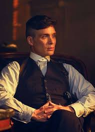

Thomas Shelby is a fictional character from 'The Peaky Blinders', a British crime show. He is known for his courage, discipline, and cunning strategies that he uses to leverage against his adversaries.
For more information on Thomas Shelby, visit this link Peaky Blinder Wiki